Sanhua es el fabricante de componentes de refrigeración más grande del mundo, con una presencia que abarca desde equipos domésticos hasta plantas industriales de gran escala. En Ecuclima distribuimos la línea completa de componentes Sanhua para refrigeración industrial y comercial en Ecuador: válvulas de expansión termostáticas, válvulas solenoides, visores de líquido, llaves de paso, filtros secadores y bobinas, todos con stock permanente en nuestro almacén de Quito.
La ventaja de Sanhua no es solo el precio competitivo: es la consistencia de calidad que permite estandarizar componentes en múltiples equipos sin preocuparse por compatibilidad. Cuando un técnico de mantenimiento abre un sistema y encuentra un componente Sanhua, sabe que el repuesto estará disponible, que las dimensiones serán exactas y que el rendimiento será predecible.
Válvulas de expansión termostáticas
Regulan el paso de refrigerante líquido al evaporador mediante la presión de un bulbo sensor montado en la línea de succión. Aunque no alcanzan la precisión de una válvula electrónica, son la elección correcta cuando el presupuesto es limitado, la carga térmica es estable o el sistema no justifica la inversión en control electrónico.
- Roscadas de 1/2"–3/8" para R404A/R507, soldables de 3/8" a 5/8", y opciones con bulbo intercambiable para diferentes refrigerantes.
- Rango de capacidad: 2 a 50 kW. No requieren alimentación eléctrica ni controlador, lo que simplifica el mantenimiento y reduce puntos de falla.
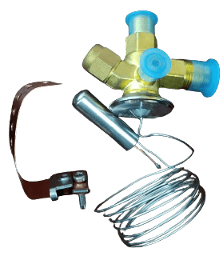
Válvula de expansión termostática roscada 1/2"–3/8" R404A/R507
Cotizar por WhatsApp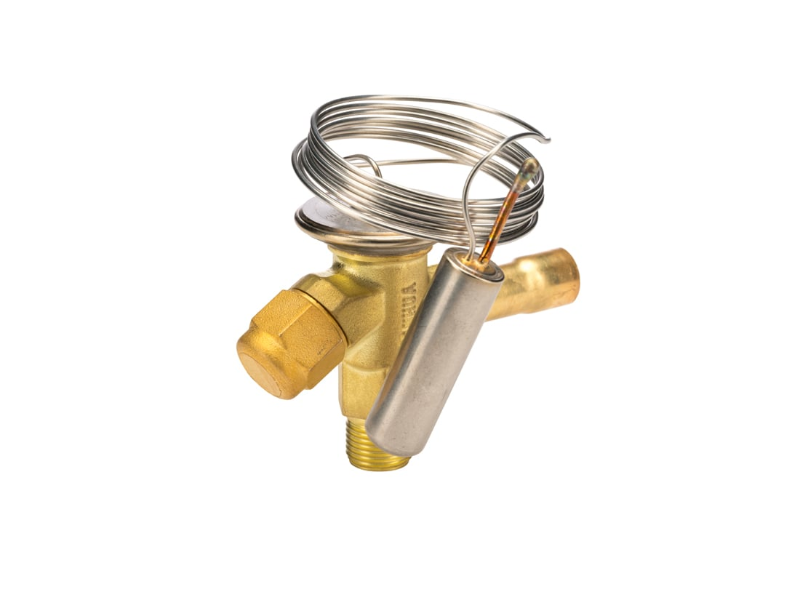
Válvula de Expansión 1/2"
Cotizar por WhatsAppVálvulas solenoides
La válvula solenoide es el interruptor eléctrico del circuito de refrigerante: abierta cuando el sistema necesita enfriar, cerrada durante desescarche o parada. Una solenoide de calidad inferior pierde hermeticidad, genera calor por bobina defectuosa o se atasca por impurezas. Las que distribuimos están diseñadas para ciclos de operación continua en ambientes industriales.
- Roscadas de 1/2" y 3/8" (modelos MDF-A03-06), soldables de 5/8" y 7/8", y bobinas de repuesto en 220–240V.
- Cuerpo de latón forjado, émbolo de acero inoxidable con resorte de acero aleado, juntas de NBR. Presión máxima 45 bar, fluido de -40°C a +120°C.
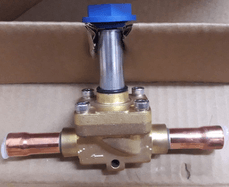
Válvula Solenoide 1/2"
Cotizar por WhatsApp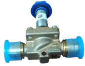
Válvula Solenoide 1/2" Rosca MDF-A03-06
Cotizar por WhatsApp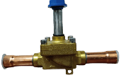
Válvula Solenoide Soldable 5/8"
Cotizar por WhatsApp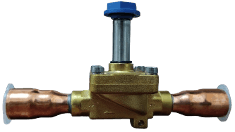
Válvula Solenoide Soldable 7/8"
Cotizar por WhatsApp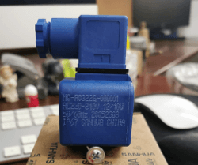
Bobina para Solenoide 220–240V
Cotizar por WhatsAppFiltros secadores y visores de líquido
El filtro secador es el guardián silencioso del circuito de refrigeración: absorbe humedad que podría formar hielo en la válvula de expansión, retiene partículas metálicas del desgaste del compresor y protege el aceite lubricante de la contaminación por ácidos. Un filtro saturado o con bypass interno es tan dañino como no tener filtro. Recomendamos reemplazo programado cada 2–3 años o cuando el diferencial de presión supere 0.5 bar.
- Roscados de 3/8" (modelo 163), 1/2" (modelo 164) y 5/8" soldable (modelo 165). Elemento desecante molecular sieve 3A.
- Visores de líquido con indicador de humedad en conexiones roscadas de 3/8" y 1/2", y soldables de 3/8": cristal templado que cambia de verde a amarillo cuando el nivel de humedad es crítico.
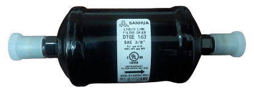
Filtro Secador 3/8" Rosca Modelo 163
Cotizar por WhatsApp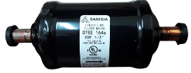
Filtro Secador 1/2" Rosca Modelo 164
Cotizar por WhatsApp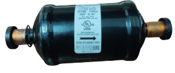
Filtro Deshidratador 5/8" Soldar Modelo 165
Cotizar por WhatsApp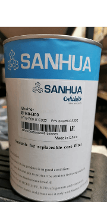
Filtro de Felpa Sanhua
Cotizar por WhatsApp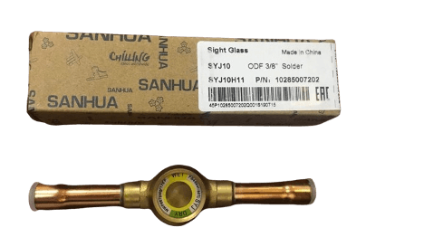
Visor 3/8" Solar
Cotizar por WhatsApp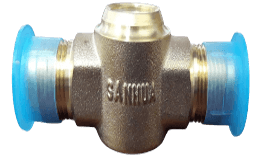
Visor 1/2" Rosca
Cotizar por WhatsApp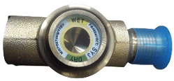
Visor de Líquido Rosca 3/8"
Cotizar por WhatsAppLlaves de paso y accesorios
Las llaves de paso tipo bola Sanhua permiten aislar secciones del circuito para mantenimiento sin necesidad de recuperar todo el refrigerante del sistema. Distribuimos llaves de paso soldables desde 3/8" hasta 1 3/8", con esfera de latón cromado y sellos de PTFE que garantizan hermeticidad absoluta en posición cerrada después de miles de ciclos de operación.
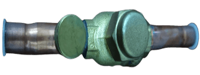
Llave de Paso 3/8" Soldar
Cotizar por WhatsApp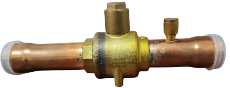
Llave de paso tipo bola 1 1/8" soldable
Cotizar por WhatsApp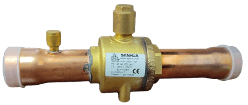
Llave de Paso Tipo Bola 1 3/8"
Cotizar por WhatsApp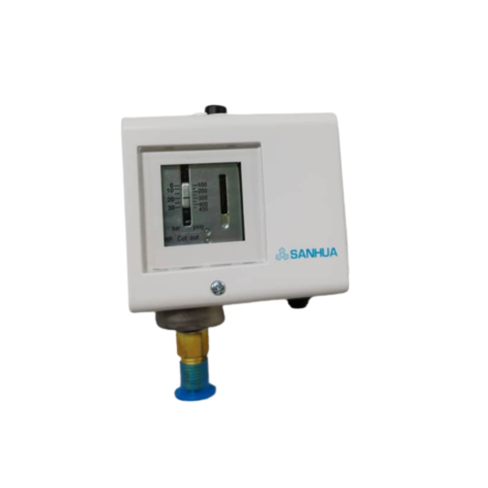
Presostato de Alta Automático
Cotizar por WhatsAppCompatibilidad y stock permanente
Todos los componentes Sanhua que distribuimos son compatibles con refrigerantes comerciales e industriales: R404A, R507, R134a, R22, R448A, R449A y R452A. Mantenemos stock permanente en Quito con despacho a cualquier provincia del Ecuador en menos de 24 horas. Si necesita un componente que no está en nuestro inventario, lo importamos con tiempo de entrega confirmado antes de cotizar.
¿Necesita repuestos Sanhua para mantenimiento o reparación? Envíenos la lista de partes y le confirmamos disponibilidad y precio en menos de 24 horas. Atendemos pedidos urgentes para paradas de planta.
Preguntas frecuentes
¿Con qué refrigerantes son compatibles los componentes Sanhua?
Todos los componentes que distribuimos son compatibles con R404A, R507, R134a, R22, R448A, R449A y R452A.
¿Cada cuánto se debe cambiar el filtro secador?
Recomendamos reemplazo programado cada 2 a 3 años, o antes si el diferencial de presión a través del filtro supera 0.5 bar, señal de que está saturado.
¿Tienen stock permanente o todo es bajo pedido?
Mantenemos stock permanente en Quito de los componentes más solicitados, con despacho a cualquier provincia del Ecuador en menos de 24 horas. Si un componente no está en inventario, lo importamos con tiempo de entrega confirmado antes de cotizar.
¿Una válvula de expansión termostática es suficiente o necesito una electrónica?
La termostática Sanhua es la opción correcta cuando el presupuesto es limitado, la carga térmica es estable o el sistema no justifica la inversión en control electrónico. No requiere alimentación eléctrica ni controlador, lo que simplifica el mantenimiento.